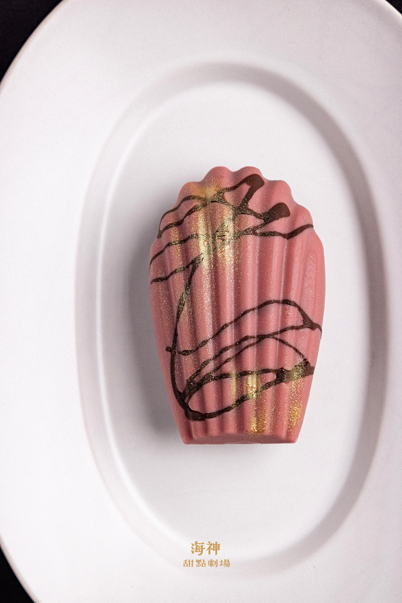
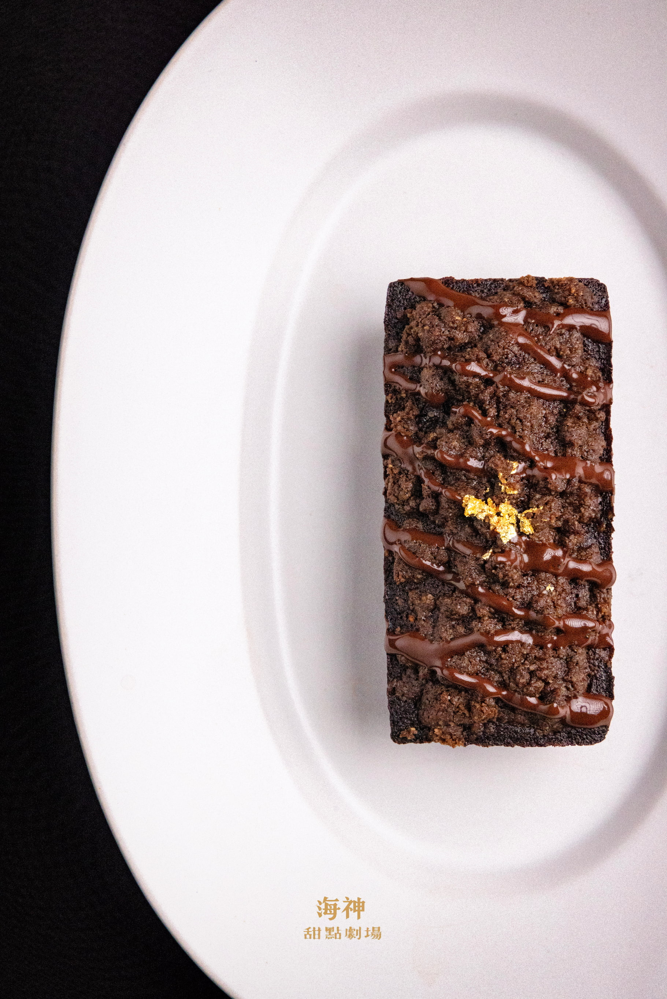

Prometheus by the Sea
夏生的庭園
Hsia Sheng's Garden
A garden that endures through eternity, unchanged.
Each character dwells in her own corner,
cycling through her story without an end.
一座歷經永劫而不毀壞分毫的花園，
這些角色們各自據居角落，
在她們的故事中輪迴。
Scroll to explore
Hsia Sheng's Garden
A garden that endures through eternity, unchanged.
Each character dwells in her own corner,
cycling through her story without an end.
一座歷經永劫而不毀壞分毫的花園，
這些角色們各自據居角落，
在她們的故事中輪迴。
「長年聽歌劇與這些角色共感，我在這些靈魂裡認出了一些永不過時的課題——那些在極端處境裡仍然試圖做出選擇的人，以及那些連選擇的權利都被奪走的人。」
"Nourished by opera across the years, finding resonance in these characters, I have recognized within these souls certain timeless themes — those who, even in the most extreme circumstances, still strive to make a choice, and those from whom even the right to choose has been taken away."
夏生 · 海神甜點劇場
我不只是一個做甜點的人。
同時我也是一個計畫主持人——甜點是這個計畫展現的媒介而不是全部。
夏生的庭園是一個十二章的甜點計畫。每一個章節從一位歌劇女主角的命運出發，提煉出一個情感命題，再把這個命題轉化成可以被觸摸、被品嚐、被記憶的物質。選角的標準只有一個：她們與選擇的關係——那些在極端處境裡仍然試圖做出選擇的人，以及那些連選擇的權利都被奪走的人。
所有的食材、視覺、攝影語言，都由命題為核心孕育發展，先決定主角的調性，再選擇最適切的表現方式。每一個章節完成之後，我會公開寫下它的檢討——哪裡到位了，哪裡沒有。這個計畫不只在做作品，它在主持一個有標準的過程，而這個標準由我自己來檢驗。
最終，這座永生的花園將生出它自己的語言，生生不息。
夏生以庭園主人的身份開場，迎接十一位女主角依序入駐。
Hsia Sheng, as keeper of the garden, opens the door.
冬日庭園 / 光與樹影
有時候我會相信，這座小小的庭園裡，藏著一條秘密路徑，能帶我走向從前的你。
這盒甜點是我對心中那座庭園的詮釋。在追尋風景的急切中，意外地在全然的寂靜裡找到了出口。這份作品清單，是獻給您的地圖，邀請您一同走入這座冬日花園。
❊ 望月｜抹茶塔
❊ 藏｜法式布丁塔

❊ 紅山茶
酒漬櫻桃巧克力貝殼蛋糕

❊ 露染苔石
抹茶柚子費南雪

❊ 礫石小徑
酒漬無花果費南雪
❊ 凝縮的時間｜重威士忌果乾磅蛋糕
❊ 餘溫｜貝里斯奶酒咖啡磅蛋糕
❊ 灰綠的樹影｜開心果巴斯克
她把回憶贈與旁人，卻將哀傷留給自己。
She gave away her memories, keeping only sorrow for herself.